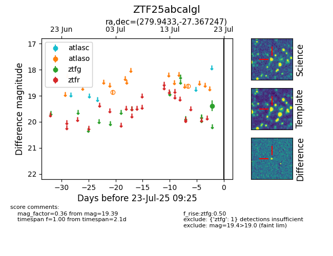

Target ZTF25abcalgl at 2025-07-23 12:37, see:
FINK: fink-portal.org/ZTF25abcalgl
Lasair: lasair-ztf.lsst.ac.uk/objects/ZTF25abcalgl
ALeRCE: alerce.online/object/ZTF25abcalgl
alt names
ZTF25abcalgl (ztf,fink)
coordinates:
equatorial (ra, dec) = (279.9433,-27.36725)
galactic (l, b) = (7.0814,-9.75302)
photometry
last atlaso=18.63, ztfg=19.39
2 atlaso, 1 ztfg detections
